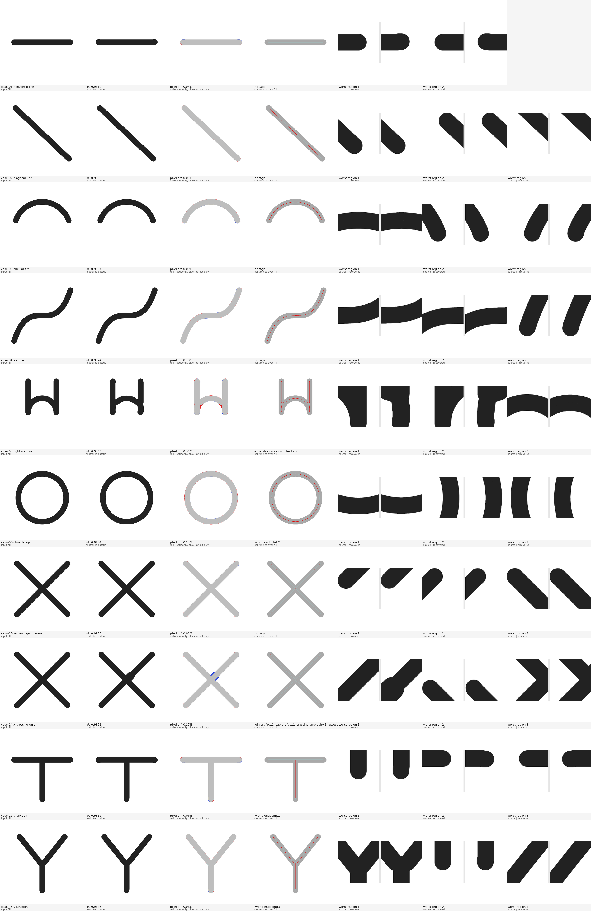

| case-01-horizontal-line | IoU 0.9810 | sym 1.93% | diff 0.04% | no tags |
|---|---|---|---|---|
| case-02-diagonal-line | IoU 0.9932 | sym 0.68% | diff 0.01% | no tags |
| case-03-circular-arc | IoU 0.9867 | sym 1.34% | diff 0.09% | no tags |
| case-04-s-curve | IoU 0.9874 | sym 1.26% | diff 0.10% | no tags |
| case-05-tight-u-curve | IoU 0.9569 | sym 4.38% | diff 0.31% | excessive curve complexity:3 |
| case-06-closed-loop | IoU 0.9834 | sym 1.67% | diff 0.23% | wrong endpoint:2 |
| case-13-x-crossing-separate | IoU 0.9986 | sym 0.14% | diff 0.02% | no tags |
| case-14-x-crossing-union | IoU 0.9852 | sym 1.50% | diff 0.17% | join artifact:1, cap artifact:1, crossing ambiguity:1, excessive curve complexity:1 |
| case-15-t-junction | IoU 0.9816 | sym 1.87% | diff 0.06% | wrong endpoint:1 |
| case-16-y-junction | IoU 0.9886 | sym 1.15% | diff 0.08% | wrong endpoint:3 |
